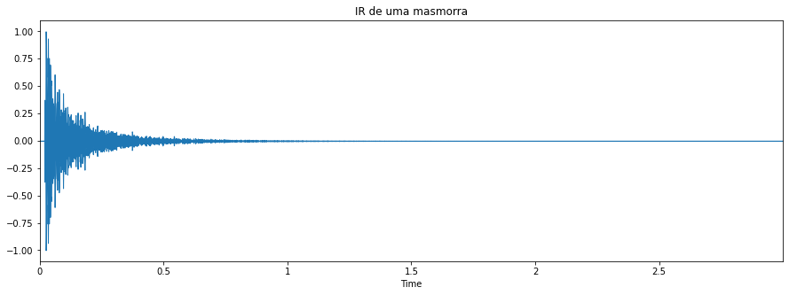

1. Objetivos
Este laboratório tem os seguintes objetivos:
- Tocar notas e gerar músicas simples;
- Gerar arquivos MIDI;
- Reproduzir arquivos MIDI;
- Simular a reprodução em salas com Respostas Impulsivas diversas.
2. Roteiro
Neste laboratório, foi utilizado o roteiro disponibilizado no próprio arquivo do Jupyter Notebook. O arquivo foi editado para atender à proposta e a versão final pode ser visualizada neste link.
3. Desenvolvimento
Inicialmente, foram gerados alguns tons com NoteSequences para criar um arquivo MIDI. O primeiro teste criou uma pequena música conhecida como "Twinkle twinkle", cujo diagrama pitch do MIDI pode ser visto na imagem abaixo, seguido do player do som gerado.
No segundo teste, foi criada a música "Asa Branca", que inicialmente possuía um pequeno erro de tempo em algumas notas. A versão corrigida pode ser vista a seguir.
Para fechar os testes iniciais, foi gerado uma pequena sequência mudança de instrumento para bateria.

Foi proposto que o grupo criasse algumas músicas, então abaixo podem ser contempladas as criações dos integrantes do grupo.
Música de Luiz: "Atirei o pau no gato":

Música de Heitor: "Cai cai balão":


No próximo teste, foi realizada a simulação de execução das músicas em ambientes diferentes usando a resposta impulsiva gerada em diversos locais, com auxílio da biblioteca de áudio disponível em https://www.openair.hosted.york.ac.uk/?page_id=36. Abaixo estão relacionadas as respostas impulsivas de diversos ambientes.
01. Capela:
Fonte: https://www.openair.hosted.york.ac.uk/?page_id=595
02. Sala de concertos:
Fonte: https://www.openair.hosted.york.ac.uk/?page_id=770
03. Câmara neolítica:
Fonte: https://www.openair.hosted.york.ac.uk/?page_id=602
04. Monumento:
Fonte: https://www.openair.hosted.york.ac.uk/?page_id=764
05. Masmorra:

Fonte: https://www.openair.hosted.york.ac.uk/?page_id=468
06. Quadra:
Fonte: https://www.openair.hosted.york.ac.uk/?page_id=476
07. Catedral:
Fonte: https://www.openair.hosted.york.ac.uk/?page_id=797
Abaixo, seguem os áudios das versões de "Atirei o pau no gato", executadas em ambientes diferentes.
"Atirei o pau no gato" em capela de igreja:
"Atirei o pau no gato" em sala de concertos:
"Atirei o pau no gato" em câmara neolítica:
"Atirei o pau no gato" em monumento:
"Atirei o pau no gato" em masmorra:
"Atirei o pau no gato" em quadra:
"Atirei o pau no gato" em catedral:
Abaixo, seguem os áudios das versões de "Cai cai balão", executadas em ambientes diferentes.
"Cai cai balão" em capela de igreja:
"Cai cai balão" em sala de concertos:
"Cai cai balão" em câmara neolítica:
"Cai cai balão" em monumento:
"Cai cai balão" em masmorra:
"Cai cai balão" em quadra:
"Cai cai balão" em catedral:
4. Conclusões
Este laboratório de criação de música foi muito interessante por consolidar a teoria relacionada ao MIDI. Foi possível constatar na prática que MIDI não é exatamente um arquivo de música, mas uma espécie de "partitura digital" com a qual instrumentos e computadores podem gerar sinais de áudio. A modulação do áudio com a resposta impulsiva deu uma amostra do poder desta tecnologia, com a qual pode-se efetivamente criar música digital e simular sua execução em uma grande diversidade de situações promovendo um caráter mais realista e "concreto". Vale destacar que a execução deste laboratório serviu como uma excelente base para a criação do conteúdo de nosso seminário sobre o tema, que pode ser visualizado no vídeo abaixo.